En bref
Blizzard a annoncé plus de 600 nouvelles recettes, sans publier la liste complète. Cette fiche rassemble les 223 recettes de Enchantement relevées dans les fichiers du jeu (client 1.60.1.70862, consultés le 12 novembre 2026). Les noms et les compétences requises viennent des fichiers du jeu. L’obtention indiquée « inconnu » reste à confirmer. Les tableaux sont groupés par palier de compétence requise. Quand l’obtention, la source ou la zone n’est pas indiquée dans les données consultées, la cellule le dit clairement. Aucun taux de butin n’est repris, aucun n’était indiqué.[1][2][4][3]
Points clés
- 223 recettes de Enchantement listées ci-dessous, d’après les fichiers du jeu (client 1.60.1.70862, 12 novembre 2026) ; l’obtention « inconnu » reste à confirmer.[4] Données du jeu (client 1.60.1.70862)
- Obtention indiquée dans les fichiers du jeu : formateur 64, butin 1, quête 2, réputation 11, inconnu 145.[4] Données du jeu (client 1.60.1.70862)
- Blizzard n’a pas publié la liste complète des recettes, ni les formateurs, vendeurs, prix ou taux de butin.[1][2]
- Composants de 223 recettes et 103 matériaux liés à leur fiche « où le trouver » (fichiers du jeu).[5] Données du jeu (client 1.60.1.70862)
Comment lire cette liste
Cette liste n’est pas officielle. Blizzard n’a pas publié le détail des recettes de ce métier (vendeurs, formateurs, monstres, zones, prix, taux de butin). Les noms et les compétences ci-dessous viennent des fichiers du jeu (client 1.60.1.70862). L’obtention « inconnu » reste à confirmer. Le nom français est celui de la localisation du jeu lorsqu’il a été trouvé ; à défaut, le nom anglais est utilisé dans les deux langues. « Formateur » couvre aussi les recettes indiquées comme apprises automatiquement avec le métier. Une page d’ensemble déjà en ligne, Recettes et plans avancés (/fr/metiers/recettes-et-plans-avances/), rappelle les règles officielles d’obtention et les recettes à butin déjà présentées par zone.[1][2][4][3]
- 223 recettes listées pour Enchantement.[4] Données du jeu (client 1.60.1.70862)
- Répartition dans les fichiers du jeu : formateur 64, butin 1, quête 2, réputation 11, inconnu 145.[4] Données du jeu (client 1.60.1.70862)
- Zone renseignée pour 1 recette(s) ; non indiquée pour les autres.[4] Données du jeu (client 1.60.1.70862)
Compétence 1–75 — 12 recettes (données du jeu)
| Recette | Compétence requise | Obtention | Source | Zone | Statut |
|---|---|---|---|---|---|
| De poussière à granules | 1 | formateur | appris automatiquement avec le métier | non indiqué | données du jeu |
| Enchantement de brassards (Endurance médiocre) | 1 | formateur | appris automatiquement avec le métier | non indiqué | données du jeu |
| Luth enchanté | 1 | formateur | maître de métier (non nommé) | non indiqué | données du jeu |
| Baguette d’entraînement de novice | 1 | formateur | appris automatiquement avec le métier | non indiqué | données du jeu |
| Bâtonnet runique en cuivre | 1 | formateur | appris automatiquement avec le métier | non indiqué | données du jeu |
| Huile de sorcier mineure | 5 | inconnu | non indiqué | non indiqué | données du jeu — obtention à confirmer |
| Enchantement de plastron (Intelligence mineure) | 20 | inconnu | non indiqué | non indiqué | données du jeu — obtention à confirmer |
| Ench. de bracelets (Esprit mineur) | 60 | inconnu | non indiqué | non indiqué | données du jeu — obtention à confirmer |
| Enchantement de plastron (Endurance médiocre) | 60 | formateur | maître de métier (non nommé) | non indiqué | données du jeu |
| Baguette magique inférieure | 65 | formateur | maître de métier (non nommé) | non indiqué | données du jeu |
| Ench. de bracelets (Déviation mineure) | 70 | formateur | maître de métier (non nommé) | non indiqué | données du jeu |
| Enchantement de brassards (Intelligence mineure) | 70 | inconnu | non indiqué | non indiqué | données du jeu — obtention à confirmer |
Compétence 76–150 — 45 recettes (données du jeu)
| Recette | Compétence requise | Obtention | Source | Zone | Statut |
|---|---|---|---|---|---|
| Ench. de bracelets (Force mineure) | 80 | inconnu | non indiqué | non indiqué | données du jeu — obtention à confirmer |
| Enchantement de plastron (Intelligence inférieure) | 80 | inconnu | non indiqué | non indiqué | données du jeu — obtention à confirmer |
| Ench. de plastron (Absorption mineure) | 80 | formateur | maître de métier (non nommé) | non indiqué | données du jeu |
| Ench. de cape (Résistance mineure) | 85 | formateur | maître de métier (non nommé) | non indiqué | données du jeu |
| Enchantement de brassards (Pouvoir de guérison mineur) | 90 | inconnu | non indiqué | non indiqué | données du jeu — obtention à confirmer |
| Ench. de bracelets (Endurance mineure) | 90 | formateur | maître de métier (non nommé) | non indiqué | données du jeu |
| Ench. de cape (Protection mineure) | 90 | inconnu | non indiqué | non indiqué | données du jeu — obtention à confirmer |
| Ench. d'arme (Tueur de bête mineur) | 90 | inconnu | non indiqué | non indiqué | données du jeu — obtention à confirmer |
| Enchantement de plastron (Endurance inférieure) | 95 | formateur | maître de métier (non nommé) | non indiqué | données du jeu |
| Ench. d'arme 2M (Intelligence inférieure) | 100 | inconnu | non indiqué | non indiqué | données du jeu — obtention à confirmer |
| Baguette magique supérieure | 100 | formateur | maître de métier (non nommé) | non indiqué | données du jeu |
| Ench. de bracelets (Agilité mineure) | 105 | formateur | maître de métier (non nommé) | non indiqué | données du jeu |
| Ench. d'arme 2M (Esprit inférieur) | 110 | inconnu | non indiqué | non indiqué | données du jeu — obtention à confirmer |
| Ench. de cape (Agilité mineure) | 110 | inconnu | non indiqué | non indiqué | données du jeu — obtention à confirmer |
| Ench. d'arme (Frappe mineure) | 110 | formateur | maître de métier (non nommé) | non indiqué | données du jeu |
| Ench. de bouclier (Protection inférieure) | 115 | inconnu | non indiqué | non indiqué | données du jeu — obtention à confirmer |
| Ench. d'arme 2M (impact mineur) | 120 | formateur | maître de métier (non nommé) | non indiqué | données du jeu |
| Ench. de bracelets (Esprit inférieur) | 120 | inconnu | non indiqué | non indiqué | données du jeu — obtention à confirmer |
| Ench. de bouclier (Endurance mineure) | 120 | formateur | maître de métier (non nommé) | non indiqué | données du jeu |
| Bâtonnet runique en argent | 120 | formateur | maître de métier (non nommé) | non indiqué | données du jeu |
| Ench. de bottes (Agilité mineure) | 125 | inconnu | non indiqué | non indiqué | données du jeu — obtention à confirmer |
| Ench. de bottes (Endurance mineure) | 125 | inconnu | non indiqué | non indiqué | données du jeu — obtention à confirmer |
| Ench. de cape (Protection inférieure) | 130 | formateur | maître de métier (non nommé) | non indiqué | données du jeu |
| Champignon mystique | 130 | inconnu | non indiqué | non indiqué | données du jeu — obtention à confirmer |
| Icône en bois flotté poli | 130 | inconnu | non indiqué | non indiqué | données du jeu — obtention à confirmer |
| Doctrines de la Main d’argent | 130 | inconnu | non indiqué | non indiqué | données du jeu — obtention à confirmer |
| Enchantement de plastron (Endurance) | 135 | formateur | maître de métier (non nommé) | non indiqué | données du jeu |
| Ench. de cape (Résistance à l'Ombre inf.) | 135 | inconnu | non indiqué | non indiqué | données du jeu — obtention à confirmer |
| Récupérateur arcanique | 140 | butin | Rath'mael ; Charlga Razorflank | Razorfen Kraul ; Ruines de Lordaeron | données du jeu |
| Enchantement de brassards (Agilité inférieure) | 140 | quête | Mysterious Mysticism | non indiqué | données du jeu |
| Ench. de bracelets (Force inférieure) | 140 | inconnu | non indiqué | non indiqué | données du jeu — obtention à confirmer |
| Ench. de cape (Résistance au Feu inf.) | 140 | formateur | maître de métier (non nommé) | non indiqué | données du jeu |
| Enchantement d’arme (Clairvoyance) | 140 | inconnu | non indiqué | non indiqué | données du jeu — obtention à confirmer |
| Enchantement d’arme (Récupération) | 140 | inconnu | non indiqué | non indiqué | données du jeu — obtention à confirmer |
| Enchantement d’arme (Révélation) | 140 | inconnu | non indiqué | non indiqué | données du jeu — obtention à confirmer |
| Bâton scintillant | 140 | inconnu | non indiqué | non indiqué | données du jeu — obtention à confirmer |
| Orbe de clairvoyance mystique | 140 | inconnu | non indiqué | non indiqué | données du jeu — obtention à confirmer |
| Orbe des âmes | 140 | inconnu | non indiqué | non indiqué | données du jeu — obtention à confirmer |
| Bâton des âmes | 140 | inconnu | non indiqué | non indiqué | données du jeu — obtention à confirmer |
| Ench. de bracelets (Endurance inférieure) | 145 | formateur | maître de métier (non nommé) | non indiqué | données du jeu |
| Ench. de gants (Pêche) | 145 | inconnu | non indiqué | non indiqué | données du jeu — obtention à confirmer |
| Ench. de gants (Herboristerie) | 145 | inconnu | non indiqué | non indiqué | données du jeu — obtention à confirmer |
| Ench. de gants (Minage) | 145 | inconnu | non indiqué | non indiqué | données du jeu — obtention à confirmer |
| Ench. de bouclier (Esprit inférieur) | 145 | formateur | maître de métier (non nommé) | non indiqué | données du jeu |
| Huile de mana mineure | 150 | inconnu | non indiqué | non indiqué | données du jeu — obtention à confirmer |
Compétence 151–225 — 60 recettes (données du jeu)
| Recette | Compétence requise | Obtention | Source | Zone | Statut |
|---|---|---|---|---|---|
| Ench. de plastron (Absorption inférieure) | 155 | formateur | maître de métier (non nommé) | non indiqué | données du jeu |
| Ench. d'arme (Frappe inférieure) | 155 | formateur | maître de métier (non nommé) | non indiqué | données du jeu |
| Ench. d'arme 2M (Impact inférieur) | 160 | formateur | maître de métier (non nommé) | non indiqué | données du jeu |
| Enchantement de plastron (Intelligence) | 160 | formateur | maître de métier (non nommé) | non indiqué | données du jeu |
| Ench. de bracelets (Intelligence inférieure) | 165 | formateur | maître de métier (non nommé) | non indiqué | données du jeu |
| Ench. de plastron (Caract. mineures) | 165 | formateur | maître de métier (non nommé) | non indiqué | données du jeu |
| Ench. de cape (Défense) | 165 | formateur | maître de métier (non nommé) | non indiqué | données du jeu |
| Ench. de bouclier (Endurance inférieure) | 165 | formateur | maître de métier (non nommé) | non indiqué | données du jeu |
| Baguette mystique inférieure | 165 | formateur | maître de métier (non nommé) | non indiqué | données du jeu |
| Ench. de bottes (Agilité inférieure) | 170 | formateur | maître de métier (non nommé) | non indiqué | données du jeu |
| Ench. de bracelets (Déviation inférieure) | 170 | inconnu | non indiqué | non indiqué | données du jeu — obtention à confirmer |
| Enchantement de plastron (Endurance supérieure) | 170 | formateur | maître de métier (non nommé) | non indiqué | données du jeu |
| Ench. de bracelets (Esprit) | 175 | formateur | maître de métier (non nommé) | non indiqué | données du jeu |
| Ench. d'arme (Tueur de bête inférieur) | 175 | inconnu | non indiqué | non indiqué | données du jeu — obtention à confirmer |
| Ench. d'arme (Tueur d'élémentaire inférieur) | 175 | inconnu | non indiqué | non indiqué | données du jeu — obtention à confirmer |
| Ench. de bottes (Endurance inférieure) | 180 | formateur | maître de métier (non nommé) | non indiqué | données du jeu |
| Ench. de bracelets (Endurance) | 180 | formateur | maître de métier (non nommé) | non indiqué | données du jeu |
| Ench. de cape (Résistance au Feu) | 185 | formateur | maître de métier (non nommé) | non indiqué | données du jeu |
| Baguette du Néant distordue | 185 | inconnu | non indiqué | non indiqué | données du jeu — obtention à confirmer |
| Ench. de bottes (Esprit inférieur) | 190 | inconnu | non indiqué | non indiqué | données du jeu — obtention à confirmer |
| Enchantement de brassards (Agilité) | 190 | inconnu | non indiqué | non indiqué | données du jeu — obtention à confirmer |
| Enchantement de brassards (Agilité) | 190 | inconnu | non indiqué | non indiqué | données du jeu — obtention à confirmer |
| Ench. de bracelets (Force) | 190 | formateur | maître de métier (non nommé) | non indiqué | données du jeu |
| Ench. de bouclier (Esprit) | 190 | formateur | maître de métier (non nommé) | non indiqué | données du jeu |
| Ench. d'arme (Puissance de l'hiver) | 190 | inconnu | non indiqué | non indiqué | données du jeu — obtention à confirmer |
| Enchantement de plastron (Intelligence supérieure) | 195 | formateur | maître de métier (non nommé) | non indiqué | données du jeu |
| Ench. de bouclier (Blocage inférieur) | 195 | inconnu | non indiqué | non indiqué | données du jeu — obtention à confirmer |
| Ench. de gants (Dépeçage) | 200 | inconnu | non indiqué | non indiqué | données du jeu — obtention à confirmer |
| Huile de sorcier inférieure | 200 | inconnu | non indiqué | non indiqué | données du jeu — obtention à confirmer |
| Enchantement de brassards (Pouvoir de guérison inférieur) | 205 | quête | Mysterious Mysticism | non indiqué | données du jeu |
| Ench. d'arme (Frappe) | 205 | formateur | maître de métier (non nommé) | non indiqué | données du jeu |
| Ench. d'arme 2M (Impact) | 210 | formateur | maître de métier (non nommé) | non indiqué | données du jeu |
| Enchant 2H Weapon - Lesser Agility | 210 | inconnu | non indiqué | non indiqué | données du jeu — obtention à confirmer |
| Ench. de plastron (Caract. inférieures) | 210 | formateur | maître de métier (non nommé) | non indiqué | données du jeu |
| Enchantement de collier (Agilité) | 210 | inconnu | non indiqué | non indiqué | données du jeu — obtention à confirmer |
| Enchantement de collier (Déviation) | 210 | inconnu | non indiqué | non indiqué | données du jeu — obtention à confirmer |
| Enchantement de collier (Pouvoir de guérison) | 210 | inconnu | non indiqué | non indiqué | données du jeu — obtention à confirmer |
| Enchantement de collier (Puissance des sorts) | 210 | inconnu | non indiqué | non indiqué | données du jeu — obtention à confirmer |
| Enchantement de collier (Force) | 210 | inconnu | non indiqué | non indiqué | données du jeu — obtention à confirmer |
| Ench. de bouclier (Endurance) | 210 | inconnu | non indiqué | non indiqué | données du jeu — obtention à confirmer |
| Libram d’invocation | 210 | inconnu | non indiqué | non indiqué | données du jeu — obtention à confirmer |
| Bâtonnet runique en vrai-argent | 210 | formateur | maître de métier (non nommé) | non indiqué | données du jeu |
| Serres de la colère | 210 | inconnu | non indiqué | non indiqué | données du jeu — obtention à confirmer |
| Totem de protection ancestrale | 210 | inconnu | non indiqué | non indiqué | données du jeu — obtention à confirmer |
| Baguette branchonirique | 215 | inconnu | non indiqué | non indiqué | données du jeu — obtention à confirmer |
| Ench. de cape (Défense supérieure) | 215 | formateur | maître de métier (non nommé) | non indiqué | données du jeu |
| Ench. de cape (Résistance) | 215 | formateur | maître de métier (non nommé) | non indiqué | données du jeu |
| Ench. de gants (Minage avancé) | 215 | inconnu | non indiqué | non indiqué | données du jeu — obtention à confirmer |
| Bâton onirique | 220 | inconnu | non indiqué | non indiqué | données du jeu — obtention à confirmer |
| Enchant 2H Weapon - Lesser Strength | 220 | inconnu | non indiqué | non indiqué | données du jeu — obtention à confirmer |
| Ench. de bracelets (Esprit supérieur) | 220 | inconnu | non indiqué | non indiqué | données du jeu — obtention à confirmer |
| Ench. de bracelets (Intelligence) | 220 | formateur | maître de métier (non nommé) | non indiqué | données du jeu |
| Enchantement de plastron (Absorption) | 220 | inconnu | non indiqué | non indiqué | données du jeu — obtention à confirmer |
| Ench. de gants (Agilité) | 220 | formateur | maître de métier (non nommé) | non indiqué | données du jeu |
| Bâton radieux | 220 | inconnu | non indiqué | non indiqué | données du jeu — obtention à confirmer |
| Conduit en vrai-argent | 220 | inconnu | non indiqué | non indiqué | données du jeu — obtention à confirmer |
| Jarre d’essence distordue | 220 | inconnu | non indiqué | non indiqué | données du jeu — obtention à confirmer |
| Ench. de bottes (Endurance) | 225 | formateur | maître de métier (non nommé) | non indiqué | données du jeu |
| Ench. de cape (Agilité inférieure) | 225 | inconnu | non indiqué | non indiqué | données du jeu — obtention à confirmer |
| Ench. de gants (Herboristerie avancée) | 225 | inconnu | non indiqué | non indiqué | données du jeu — obtention à confirmer |
Compétence 226–300 — 106 recettes (données du jeu)
| Recette | Compétence requise | Obtention | Source | Zone | Statut |
|---|---|---|---|---|---|
| Enchantement de plastron (Endurance excellente) | 230 | formateur | maître de métier (non nommé) | non indiqué | données du jeu |
| Ench. d'arme (Tueur de démons) | 230 | inconnu | non indiqué | non indiqué | données du jeu — obtention à confirmer |
| Ench. de bottes (Vitesse mineure) | 235 | formateur | maître de métier (non nommé) | non indiqué | données du jeu |
| Ench. de bracelets (Déviation) | 235 | inconnu | non indiqué | non indiqué | données du jeu — obtention à confirmer |
| Ench. de gants (Force) | 235 | formateur | maître de métier (non nommé) | non indiqué | données du jeu |
| Ench. de bouclier (Résistance au Givre) | 235 | inconnu | non indiqué | non indiqué | données du jeu — obtention à confirmer |
| Enchantement de brassards (Agilité supérieure) | 240 | inconnu | non indiqué | non indiqué | données du jeu — obtention à confirmer |
| Enchantement de plastron (Intelligence excellente) | 240 | formateur | maître de métier (non nommé) | non indiqué | données du jeu |
| Ench. de bouclier (Esprit supérieur) | 240 | formateur | maître de métier (non nommé) | non indiqué | données du jeu |
| Ench. de bottes (Agilité) | 245 | formateur | maître de métier (non nommé) | non indiqué | données du jeu |
| Ench. de bracelets (Endurance supérieure) | 245 | inconnu | non indiqué | non indiqué | données du jeu — obtention à confirmer |
| Cuir enchanté | 245 | formateur | maître de métier (non nommé) | non indiqué | données du jeu |
| Thorium enchanté | 245 | formateur | maître de métier (non nommé) | non indiqué | données du jeu |
| Baguette éternelle inférieure | 245 | inconnu | non indiqué | non indiqué | données du jeu — obtention à confirmer |
| Ench. d'arme 2M (Impact supérieur) | 250 | formateur | maître de métier (non nommé) | non indiqué | données du jeu |
| Ench. de bracelets (Force supérieure) | 250 | formateur | maître de métier (non nommé) | non indiqué | données du jeu |
| Enchantement de gants (Dépeçage avancé) | 250 | inconnu | non indiqué | non indiqué | données du jeu — obtention à confirmer |
| Ench. de gants (Equitation) | 250 | inconnu | non indiqué | non indiqué | données du jeu — obtention à confirmer |
| Huile de mana inférieure | 250 | inconnu | non indiqué | non indiqué | données du jeu — obtention à confirmer |
| Ench. de bracelets (Intelligence supérieure) | 255 | inconnu | non indiqué | non indiqué | données du jeu — obtention à confirmer |
| Ench. de plastron (Caractéristiques) | 255 | formateur | maître de métier (non nommé) | non indiqué | données du jeu |
| Ench. d'arme (Frappe supérieure) | 255 | formateur | maître de métier (non nommé) | non indiqué | données du jeu |
| Ench. de bottes (Endurance supérieure) | 260 | inconnu | non indiqué | non indiqué | données du jeu — obtention à confirmer |
| Ench. de gants (Hâte mineure) | 260 | formateur | maître de métier (non nommé) | non indiqué | données du jeu |
| Ench. de cape (Résistance supérieure) | 265 | inconnu | non indiqué | non indiqué | données du jeu — obtention à confirmer |
| Ench. de bouclier (Endurance supérieure) | 265 | inconnu | non indiqué | non indiqué | données du jeu — obtention à confirmer |
| Ench. d'arme (Arme flamboyante) | 265 | inconnu | non indiqué | non indiqué | données du jeu — obtention à confirmer |
| Cœur gelé de la montagne | 265 | inconnu | non indiqué | non indiqué | données du jeu — obtention à confirmer |
| Cœur brûlant de la montagne | 265 | inconnu | non indiqué | non indiqué | données du jeu — obtention à confirmer |
| Coeur fumant de la montagne | 265 | inconnu | non indiqué | non indiqué | données du jeu — obtention à confirmer |
| Ench. de bracelets (Esprit excellent) | 270 | inconnu | non indiqué | non indiqué | données du jeu — obtention à confirmer |
| Ench. de gants (Agilité supérieure) | 270 | inconnu | non indiqué | non indiqué | données du jeu — obtention à confirmer |
| Baguette brillante | 275 | inconnu | non indiqué | non indiqué | données du jeu — obtention à confirmer |
| Ench. de bottes (Esprit) | 275 | inconnu | non indiqué | non indiqué | données du jeu — obtention à confirmer |
| Enchantement de plastron (Endurance majeure) | 275 | inconnu | non indiqué | non indiqué | données du jeu — obtention à confirmer |
| Baguette éternelle supérieure | 275 | inconnu | non indiqué | non indiqué | données du jeu — obtention à confirmer |
| Huile de sorcier | 275 | inconnu | non indiqué | non indiqué | données du jeu — obtention à confirmer |
| Enchantement d’arme à deux mains (Grand arcaniste) | 280 | inconnu | non indiqué | non indiqué | données du jeu — obtention à confirmer |
| Enchantement d’arme à deux mains (Grand Inquisiteur) | 280 | inconnu | non indiqué | non indiqué | données du jeu — obtention à confirmer |
| Ench. de bouclier (Esprit excellent) | 280 | inconnu | non indiqué | non indiqué | données du jeu — obtention à confirmer |
| Enchantement d’arme (Grand sorcier) | 280 | inconnu | non indiqué | non indiqué | données du jeu — obtention à confirmer |
| Ench. de cape (Défense excellente) | 285 | inconnu | non indiqué | non indiqué | données du jeu — obtention à confirmer |
| Ench. d'arme (Frisson glacial) | 285 | inconnu | non indiqué | non indiqué | données du jeu — obtention à confirmer |
| Ench. d'arme 2M (Agilité) | 290 | réputation | Les Grumegueules (Amical) | non indiqué | données du jeu |
| Enchant 2H Weapon - Strength | 290 | inconnu | non indiqué | non indiqué | données du jeu — obtention à confirmer |
| Ench. de bracelets (Régénération de mana) | 290 | réputation | Aube d'argent (Honoré) | non indiqué | données du jeu |
| Enchantement de plastron (Intelligence majeure) | 290 | inconnu | non indiqué | non indiqué | données du jeu — obtention à confirmer |
| Ench. d'arme (Agilité) | 290 | réputation | Les Grumegueules (Honoré) | non indiqué | données du jeu |
| Ench. d'arme (Force) | 290 | réputation | Confrérie du thorium (Amical) | non indiqué | données du jeu |
| Bâtonnet runique en arcanite | 290 | inconnu | non indiqué | non indiqué | données du jeu — obtention à confirmer |
| Ench. d'arme 2M (Impact excellent) | 295 | inconnu | non indiqué | non indiqué | données du jeu — obtention à confirmer |
| Ench. de bottes (Agilité supérieure) | 295 | inconnu | non indiqué | non indiqué | données du jeu — obtention à confirmer |
| Enchantement de brassards (Agilité excellente) | 295 | inconnu | non indiqué | non indiqué | données du jeu — obtention à confirmer |
| Ench. de bracelets (Force excellente) | 295 | inconnu | non indiqué | non indiqué | données du jeu — obtention à confirmer |
| Ench. de gants (Force supérieure) | 295 | inconnu | non indiqué | non indiqué | données du jeu — obtention à confirmer |
| Enchantement de gants (Griffe du lotus) | 295 | inconnu | non indiqué | non indiqué | données du jeu — obtention à confirmer |
| Ench. d'arme (Arme impie) | 295 | inconnu | non indiqué | non indiqué | données du jeu — obtention à confirmer |
| Forge arcanique | 300 | inconnu | non indiqué | non indiqué | données du jeu — obtention à confirmer |
| Huile de mana brillante | 300 | réputation | Tribu Zandalar (Amical) | non indiqué | données du jeu |
| Huile de sorcier brillante | 300 | réputation | Tribu Zandalar (Honoré) | non indiqué | données du jeu |
| Ench. d'arme 2M (Intelligence majeure) | 300 | inconnu | non indiqué | non indiqué | données du jeu — obtention à confirmer |
| Ench. d'arme 2M (Esprit majeur) | 300 | inconnu | non indiqué | non indiqué | données du jeu — obtention à confirmer |
| Enchant 2H Weapon - Mighty Healing Power | 300 | inconnu | non indiqué | non indiqué | données du jeu — obtention à confirmer |
| Enchant 2H Weapon - Mighty Spell Power | 300 | inconnu | non indiqué | non indiqué | données du jeu — obtention à confirmer |
| Enchantement d’arme 2M (Explosion de sort) | 300 | inconnu | non indiqué | non indiqué | données du jeu — obtention à confirmer |
| Enchantement de brassards (Puissance des sorts supérieure) | 300 | inconnu | non indiqué | non indiqué | données du jeu — obtention à confirmer |
| Ench. de bracelets (Pouvoir de guérison) | 300 | réputation | Aube d'argent (Révéré) | non indiqué | données du jeu |
| Enchantement de brassards (Puissance des sorts) | 300 | formateur | maître de métier (non nommé) | non indiqué | données du jeu |
| Enchantement de brassards (Déviation excellente) | 300 | inconnu | non indiqué | non indiqué | données du jeu — obtention à confirmer |
| Enchantement de brassards (Intelligence excellente) | 300 | inconnu | non indiqué | non indiqué | données du jeu — obtention à confirmer |
| Ench. de bracelets (Endurance excellente) | 300 | inconnu | non indiqué | non indiqué | données du jeu — obtention à confirmer |
| Ench. de plastron (Caract. supérieures) | 300 | inconnu | non indiqué | non indiqué | données du jeu — obtention à confirmer |
| Enchantement de cape (Agilité) | 300 | inconnu | non indiqué | non indiqué | données du jeu — obtention à confirmer |
| Enchantement de cape (Esquive) | 300 | inconnu | non indiqué | non indiqué | données du jeu — obtention à confirmer |
| Ench. de cape (Résistance au Feu supérieure) | 300 | réputation | Cercle cénarien (Amical) | non indiqué | données du jeu |
| Ench. de cape (Résistance à la Nature supérieure) | 300 | réputation | Cercle cénarien (Honoré) | non indiqué | données du jeu |
| Enchantement de cape (Camouflage) | 300 | inconnu | non indiqué | non indiqué | données du jeu — obtention à confirmer |
| Enchantement de cape (Discrétion) | 300 | inconnu | non indiqué | non indiqué | données du jeu — obtention à confirmer |
| Enchantement de gants (Pouvoir des arcanes) | 300 | inconnu | non indiqué | non indiqué | données du jeu — obtention à confirmer |
| Enchantement de gants (Puissance du feu) | 300 | inconnu | non indiqué | non indiqué | données du jeu — obtention à confirmer |
| Enchantement de gants (Puissance du givre) | 300 | inconnu | non indiqué | non indiqué | données du jeu — obtention à confirmer |
| Enchantement de gants (Pouvoir de guérison) | 300 | inconnu | non indiqué | non indiqué | données du jeu — obtention à confirmer |
| Enchantement de gants (Puissance sacrée) | 300 | inconnu | non indiqué | non indiqué | données du jeu — obtention à confirmer |
| Enchantement de gants (Puissance naturelle) | 300 | inconnu | non indiqué | non indiqué | données du jeu — obtention à confirmer |
| Enchantement de gants (Puissance de l'ombre) | 300 | inconnu | non indiqué | non indiqué | données du jeu — obtention à confirmer |
| Enchantement de gants (Agilité excellente) | 300 | inconnu | non indiqué | non indiqué | données du jeu — obtention à confirmer |
| Enchantement de gants (Force excellente) | 300 | inconnu | non indiqué | non indiqué | données du jeu — obtention à confirmer |
| Enchantement de gants (Menace) | 300 | inconnu | non indiqué | non indiqué | données du jeu — obtention à confirmer |
| Enchantement d’objet en main gauche (Esprit remarquable) | 300 | inconnu | non indiqué | non indiqué | données du jeu — obtention à confirmer |
| Enchantement d’objet en main gauche (Intelligence excellente) | 300 | inconnu | non indiqué | non indiqué | données du jeu — obtention à confirmer |
| Enchantement d’objet en main gauche (Sagesse) | 300 | inconnu | non indiqué | non indiqué | données du jeu — obtention à confirmer |
| Enchantement de bouclier (Coup critique) | 300 | inconnu | non indiqué | non indiqué | données du jeu — obtention à confirmer |
| Enchantement de bouclier (Endurance excellente) | 300 | inconnu | non indiqué | non indiqué | données du jeu — obtention à confirmer |
| Ench. d'arme (Croisé) | 300 | inconnu | non indiqué | non indiqué | données du jeu — obtention à confirmer |
| Ench. d'arme (Pouvoir de guérison) | 300 | inconnu | non indiqué | non indiqué | données du jeu — obtention à confirmer |
| Ench. d'arme (Vol de vie) | 300 | inconnu | non indiqué | non indiqué | données du jeu — obtention à confirmer |
| Ench. d'arme (Intelligence renforcée) | 300 | réputation | Confrérie du thorium (Révéré) | non indiqué | données du jeu |
| Ench. d'arme (Esprit renforcé) | 300 | réputation | Confrérie du thorium (Honoré) | non indiqué | données du jeu |
| Ench. d'arme (Puissance des sorts) | 300 | inconnu | non indiqué | non indiqué | données du jeu — obtention à confirmer |
| Ench. d'arme (Frappe excellente) | 300 | inconnu | non indiqué | non indiqué | données du jeu — obtention à confirmer |
| Idole de rapidité | 300 | inconnu | non indiqué | non indiqué | données du jeu — obtention à confirmer |
| Idole des ours jumeaux | 300 | inconnu | non indiqué | non indiqué | données du jeu — obtention à confirmer |
| Libram d’imprégnation | 300 | inconnu | non indiqué | non indiqué | données du jeu — obtention à confirmer |
| Libram inébranlable | 300 | inconnu | non indiqué | non indiqué | données du jeu — obtention à confirmer |
| Torche de lumière | 300 | inconnu | non indiqué | non indiqué | données du jeu — obtention à confirmer |
| Totem d’urgence | 300 | inconnu | non indiqué | non indiqué | données du jeu — obtention à confirmer |
Matériaux : où les trouver
Les 103 matériaux demandés par les 223 recettes de cette page, rangés par famille, avec le nombre de recettes qui les utilisent. Chaque matériau mène à sa fiche « où le trouver » ; le tableau repliable donne les composants de chaque recette. Composants lus dans les fichiers du jeu (client 1.60.1.70862). Toutes les familles : Matériaux : où les trouver.[5] Données du jeu (client 1.60.1.70862)
Minerais, barres et pierres — 8
 Pyrite4
Pyrite4 Barre de vrai-argent2
Barre de vrai-argent2 Barre de thorium1
Barre de thorium1 Barre d’azerothium1
Barre d’azerothium1 Bauxite1
Bauxite1 Minerai d'argent1
Minerai d'argent1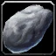
Minerai de fer1 Pierre de gardien1
Pierre de gardien1
Herbes — 12
 Lotus pourpre4
Lotus pourpre4 Fleur de feu2
Fleur de feu2 Lotus mortifère2
Lotus mortifère2 Calot de glace1
Calot de glace1 Chaperose1
Chaperose1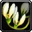
Hivernale1 Lichen à volants1
Lichen à volants1 Lotus noir1
Lotus noir1 Sang-royal1
Sang-royal1- Sauvageonne1
 Soleillette1
Soleillette1 Stranglevigne1
Stranglevigne1
Cuirs, peaux et écailles — 3
Éléments et matériaux d’enchantement — 43
 Grand éclat brillant46
Grand éclat brillant46 Essence éternelle supérieure39
Essence éternelle supérieure39 Poudre d'illusion39
Poudre d'illusion39 Cristal de nexus31
Cristal de nexus31 Poussière de rêve29
Poussière de rêve29 Poussière étrange29
Poussière étrange29 Poussière de vision22
Poussière de vision22 Poussière d'âme19
Poussière d'âme19 Gros éclat irradiant18
Gros éclat irradiant18 Essence du néant supérieure17
Essence du néant supérieure17 Essence de magie inférieure15
Essence de magie inférieure15 Essence du néant inférieure15
Essence du néant inférieure15 Essence astrale inférieure11
Essence astrale inférieure11 Gros éclat scintillant11
Gros éclat scintillant11 Essence d'air10
Essence d'air10 Essence mystique inférieure10
Essence mystique inférieure10 Essence astrale supérieure9
Essence astrale supérieure9 Essence éternelle inférieure9
Essence éternelle inférieure9 Petit éclat scintillant9
Petit éclat scintillant9 Essence d'eau8
Essence d'eau8 Petit éclat brillant8
Petit éclat brillant8 Essence de feu7
Essence de feu7 Gros éclat luminescent7
Gros éclat luminescent7 Essence de non-mort6
Essence de non-mort6 Essence malléable de la nature6
Essence malléable de la nature6 Essence mystique supérieure6
Essence mystique supérieure6 Petit éclat irradiant6
Petit éclat irradiant6 Essence de terre5
Essence de terre5 Essence de magie supérieure4
Essence de magie supérieure4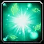
Essence de vie4 Granule de magie3
Granule de magie3 Petit éclat luminescent3
Petit éclat luminescent3 Bâtonnet en arcanite1
Bâtonnet en arcanite1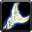
Bâtonnet en argent1 Bâtonnet en cuivre1
Bâtonnet en cuivre1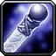
Bâtonnet en vrai-argent1 Coeur de feu1
Coeur de feu1 Feu élémentaire1
Feu élémentaire1 Globe d'eau1
Globe d'eau1 Ichor de non-mort1
Ichor de non-mort1 Noyau de terre1
Noyau de terre1 Souffle de vent1
Souffle de vent1- Terre élémentaire1
Pièces d’ingénierie — 1
Fils, fioles, teintures et autres composants — 22
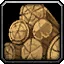
Bois d'étoile13 Teinture céruléenne9
Teinture céruléenne9 Teinture magenta9
Teinture magenta9 Orbe de piété6
Orbe de piété6 Bois simple5
Bois simple5 Acide sulfurique4
Acide sulfurique4 Sang de la montagne3
Sang de la montagne3 Fiole de cristal2
Fiole de cristal2 Fiole imprégnée2
Fiole imprégnée2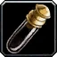
Fiole plombée2 Gangrecristal2
Gangrecristal2 Oeil ténébreux2
Oeil ténébreux2 Perle dorée2
Perle dorée2 Torbernite2
Torbernite2 Acide de larve1
Acide de larve1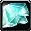
Aigue-marine1 Cristal des arcanes1
Cristal des arcanes1 Fiole vide1
Fiole vide1 Grand croc1
Grand croc1 Huile de bouche-noire1
Huile de bouche-noire1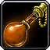
Huile de feu1 Perle noire1
Perle noire1
Objets utilisés comme composants — 14
 Sang des héros5
Sang des héros5 Graine d'érable2
Graine d'érable2- Champignon à pois rouges1
 Couture d'Abomination effilochée1
Couture d'Abomination effilochée1 Diamant noir1
Diamant noir1 Eau sacrée de Stratholme1
Eau sacrée de Stratholme1- Graine de strangleronce1
 Huile glaciale1
Huile glaciale1 Parchemin de Force II1
Parchemin de Force II1 Parchemin de Protection1
Parchemin de Protection1 Peau des ombres1
Peau des ombres1 Potion de protection contre l'Ombre1
Potion de protection contre l'Ombre1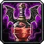
Potion de tueur de démons1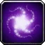
Étincelle d’invention1
Composants de chaque recette · 223 recettes
Historique des corrections
- 12 novembre 2026 (brouillon, non validé) : première liste complète des recettes de ce métier, d’après des données extraites du client, avec mention « à confirmer ». Aucune publication.[4][1]
- 13 novembre 2026 : « à confirmer » retiré des faits trouvés dans les fichiers du jeu (client 1.60.1.70862), décision t359u. L’obtention « inconnu », les zones non indiquées, les sources sans tampon de build et les valeurs seulement déduites restent à confirmer. Ce n’est pas une confirmation officielle de Blizzard, ni une mise en ligne.[4] Données du jeu (client 1.60.1.70862)
- 14 novembre 2026 : liens internes vers les fiches déjà publiées (bestiaires, listes de recettes, donjons) — lot v40, t361u. Aucun fait nouveau.[1][2][3][4]
- 17 novembre 2026 (v42) : ajout de la section « Matériaux : où les trouver » (composants de chaque recette, lus dans les fichiers du jeu, client 1.60.1.70862).[5] Données du jeu (client 1.60.1.70862)
Ce qui est confirmé / ce qui reste à confirmer
Confirmé par les sources officielles
Reste à confirmer
- Liste officielle complète des recettes, matériaux, prix et formateurs nommés : non publiée par Blizzard.
- Pour une partie des recettes, l’obtention, la source ou la zone n’était pas indiquée dans les données consultées ; ces cellules restent à « non indiqué ».
- Taux de butin : non indiqués dans les données consultées, et non publiés officiellement.
- Certaines recettes n’ont pas de nom français distinct dans les données consultées : le nom anglais est alors utilisé.
Dates clés
Sources
- [1] Récapitulatif de la présentation « Au cœur de World of Warcraft: Forever » (FR) · publié le · consulté le
World of Warcraft: Forever Deep Dive Panel Recap (EN) · publié le · consulté le - [2] Retrouvez-vous autour d’un feu de camp dans World of Warcraft: Forever (FR) · publié le · consulté le
Gather Around the Campfire in World of Warcraft: Forever (EN) · publié le · consulté le - [3] WoW: Forever Hotfixes - November 11, 2026 (EN) · publié le · consulté le
- [4] Guide Enchantement — liste des recettes (données du jeu (client 1.60.1.70862) (FR) · date de publication non indiquée · consulté le
Enchanting profession guide — full recipe list (game data (client 1.60.1.70862) (EN) · date de publication non indiquée · consulté le Données du jeu — client 1.60.1.70862 - [5] WoW Forever client files, build 1.60.1.70862 — data tables and icons read from Blizzard’s official CDN (EN) · date de publication non indiquée · consulté le Données du jeu — client 1.60.1.70862
Sources officielles Blizzard Entertainment (droits réservés). Ce wiki en propose une synthèse originale ; seules de courtes citations sont reproduites. Les informations annoncées peuvent évoluer avant ou après le lancement. Les sources marquées « données du jeu » viennent des fichiers du client WoW Forever (build 1.60.1.70862). Ce n’est pas une confirmation officielle de Blizzard.
Version documentaire : World of Warcraft: Forever — annonces officielles et fichiers du jeu (client 1.60.1.70862), état documentaire 2026-11-17 · révision 17